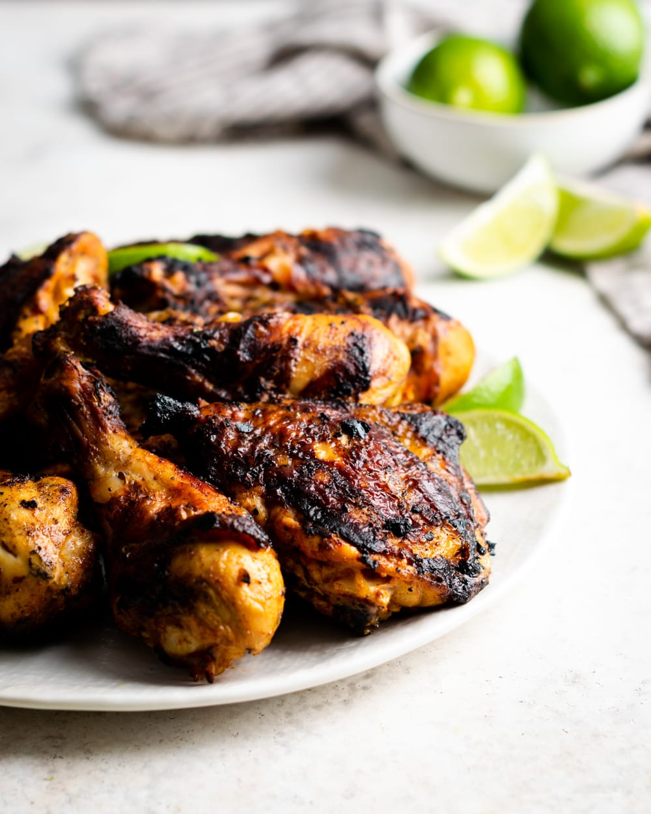

Home
Cuban Chicken

Description
Cuban chicken is a warm, comforting dish that captures the heart of everyday Cuban cooking.
It’s known for its vibrant citrus aroma, gentle garlic heat, and deeply savory flavor that
feels both bright and grounding at the same time. The dish is unfussy and homey, meant to
be shared, filling the kitchen with familiar smells and bringing balance to the table alongside
rice and beans. More than a recipe, it’s a staple that reflects the simplicity, resourcefulness,
and bold yet restrained character of Cuban cuisine.
Ingredients
- 2 (8 ounce) bone-in chicken breasts, cut in half
- 2 bone-in chicken thighs
- 2 chicken drumsticks
- 1 onion, chopped
- 3/4 cup fresh lemon juice
- 1/4 cup Worcestershire sauce
- 1 1/2 tablespoons minced garlic
- 3/4 teaspoon ground allspice
- 1/2 teaspoon onion powder
- 1/4 teaspoon ground cumin
- 1/4 teaspoon red pepper flakes
- salt and ground black pepper to taste
- cooking spray
- 1 tablespoon vegetable oil
- Place chicken pieces in a large bowl. Add onion, lemon juice, Worcestershire sauce, garlic, allspice, onion powder, cumin, red pepper flakes, salt, and black pepper; stir to coat. Cover the bowl; marinate in the refrigerator for 1 hour to 8 hours.
- Preheat the oven to 375 degrees F (190 degrees C). Lightly coat a 9x13-inch baking dish with cooking spray.
- Heat oil in a large skillet. Add chicken pieces, reserving marinade in the bowl; pan-fry until browned, about 5 minutes per side. Transfer to the prepared baking dish; pour reserved marinade on top.
- Bake in the preheated oven until juices run clear, about 40 minutes. An instant-read thermometer inserted into center of chicken pieces should read at least 165 degrees F (74 degrees C).